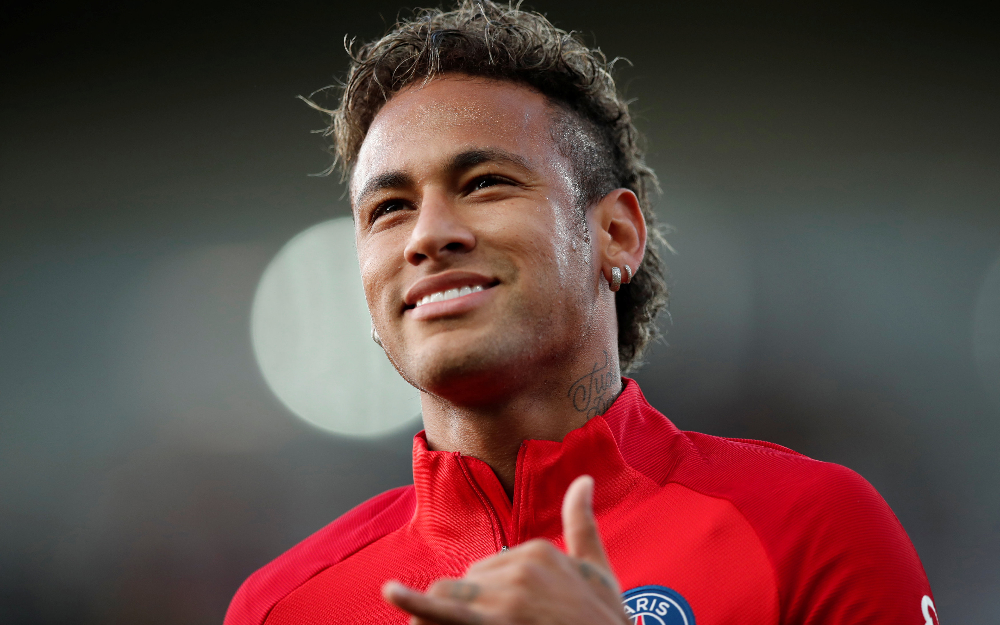

Neymar began playing football at an early age and he was soon spotted by Santos who offered him a contract in 2003, where he was inducted into their youth academy, which has, in the past, produced Brazilian internationals like Coutinho, Clodoaldo, Diego, Elano and Alex. He also joined the likes of Pepe, Pelé and Robinho in starting out his career at the club, nicknamed Peixe.[27] While in the youth academy, Neymar met Paulo Henrique Ganso, becoming good friends in the process. Aged 14, Neymar travelled to Spain for try outs with the Real Madrid youth team. He did not stay in Madrid, however, as his father decided at the time that he preferred the young prodigy to keep growing up while playing at Santos.[28][29]
neymar 